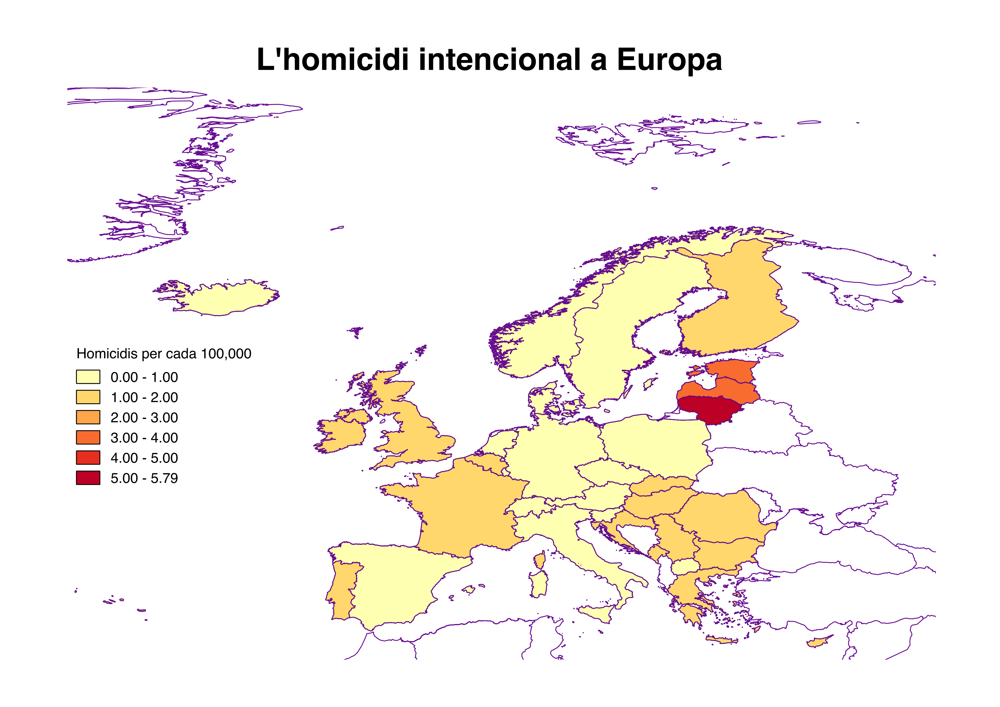

Mètodes d'Investigació Criminològica Avançada
Sessió 6: Mapatge del delicte
Planificació d'un mapa del delicte
Tema
Quina és la meva pregunta?
Què vull il·lustrar?
Dades
Quines fonts de dades es poden utilitzar?
Quins són els límits d'aquestes dades?
Public
Qui és el meu public?
Com van a utilitzar aquest mapa?
Disseny
Quines variables hauria de mostrar?
Vaig a mostrar canvis en el temps?
Quina és la forma més clara de presentar aquesta informació
Projecte de Cartografia
Geocodificació

Exercici 1
Geocodificació
Tipus de mapes
Choropleth
Mapa de puntos

Símbolos proporcionales
Exercici 2
Símbolos proporcionales
Multivariable


Exercici 3
Multivariable
mapa de flux

Projecte de Cartografia
- 13 de febrer: Tria un tema i fonts de dades
- 20 de febrer: Primer Mapa
- 27 de febrer: Segon Mapa
- 13 de març: Presentar mapes finals